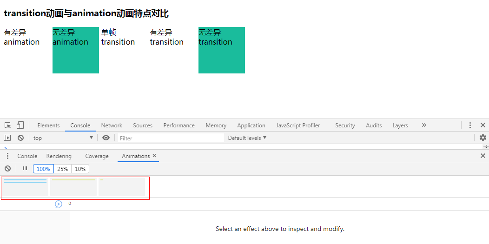

示例代码托管在：http://www.github.com/dashnowords/blogs
博客园地址：《大史住在大前端》原创博文目录
华为云社区地址：【你要的前端打怪升级指南】
Web动画的本质是元素状态改变造成的样式变更，CSS动画和JS动画的区别并不是由语言来决定的，而是由两者的特点和适用场景来判断的。CSS动画简洁高效，提升交互体验而编写的代码可以轻松地和主要业务逻辑之间实现隔离，开发中建议优先使用；而当你需要更丰富的缓动函数，多对象关联动画或是需要在动画执行的特定时间点关联一些其他的业务逻辑等需要细节控制的场景中，JS动画就会显得更加清晰且易维护，两者从来都不是非黑即白的选项。
CSS动画通常指使用transition实现的过渡动画和使用animation来实现的关键帧动画。
transition动画
transition动画也被称为“简易补间动画”，需要提供起始和结束两个关键帧，浏览器才能够完成样式差异比对并计算出对应的过渡动画。开发者编写的CSS代码会在渲染之前被浏览器使用（也就是生成CSSOM的过程），所以对于被渲染出来的元素而言，首屏渲染的结果就可以被当做是起始关键帧，那么结束关键帧从哪里来？首先通过JS脚本来修改指定元素的样式或是类名是可行的，另一种方式就是利用带有交互事件属性的CSS伪类（例如:hover或是:focus），当对应的事件触发时，新的样式就会作用于指定元素，这种特性也可以理解为CSS语法中的事件回调机制。当结束关键帧被创建后，浏览器就可以自动计算两者之间的差异并完成过渡动画。
transition动画的要点就是具有样式差异的两个关键帧。如果CSS代码中只包含一般的静态选择器（指CSS代码中不包含能够造成HTML元素状态变更的选择器），那么被渲染出的元素在整个生命周期中就只会拥有一个关键帧，也就是首次被渲染时的样式，而1个关键帧或是2个没有样式差异的关键帧都无法进行插值计算，这也就不难理解为什么首屏渲染时transition不会生效了。
所以transition动画比较适合被用来实现指定元素在两个明确的包含样式差异的状态之间往复切换的场景，像是鼠标的移入移出，元素的聚焦失焦等。
animation动画
animation动画需要使用@keyframes关键词先将动画过程抽象出来，然后将其关联给指定元素的animation属性，它可以看做是transition动画的加强版。
使用@keyframes定义动画时通常需要指定from和to两个状态（也可以使用0和100%），这意味着开发者只要按照语法要求去定义一个动画过程，它至少会包含两个关键帧，所以即使没有CSS伪类或JS脚本的帮助，依然可以独立实现动画。如果没有定义from起始关键帧的样式，animation动画也不会出错，它会默认以指定元素在动画开始时刻的样式作为起始关键帧，并结合to定义的结束关键帧和指定元素的animation定制参数来完成补间动画的计算，所以即使像下面这样的简陋写法在首屏渲染时依然可以生效：
<style>
.main{
height:100px;
width:100px;
animation:fadeIn 2s linear;
}
@keyframes fadeIn{
to{
background-color:yellowgreen;
}
}
</style>
<body>
<div class="main"></div>
</body>其次，和transition过渡动画不同的是，animation动画在不存在样式差异的关键帧之间也会执行动画，附件的示例demo中已经展示了上述几种不同动画实现方式，你可以使用Chrome DevTools中的Animations面板中来查看动画的触发效果：

最后，animation动画最显著的特点就是起止状态之间可以定义多个中间帧，这部分就不再赘述。综上可知，animation是一种强制执行的动画，既对transition过渡动画失效的场景进行了补充实现，同时也增加了动画细节的可定制性（例如循环动画或往复动画的实现），但它的功能扩展仍然是针对单过程动画的。关于animation动画还不熟悉的读者可以查看【MDN-CSS Animations】。
JS动画并不是指Web Animations API(MDN文档——Web Animations API )，它毕竟还只是个草案，了解一下即可。本节所说的JS动画，既包括在脚本中修改元素类名或动画样式的方式，也包括区别于【关键帧动画】的另一种形式——【逐帧动画】。逐帧动画不再借助浏览器内部的插值机制来生成渲染画面，而是将对应的逻辑在JavaScript中实现，每一帧的状态都由JS来计算生成，然后借助requestAnimationFrame来将动画中的每一帧传递到渲染管线中，你可以使用任何自定义的时间函数来执行动画，也可以同时方便地管理多个对象的多个不同动画，另外动画的进度也是全生命周期可感知的（CSS动画只有animationstart和animationend等少量的事件），你可以自由地实现动画暂停或者恢复，又或者是在动画执行到某一特定时刻时触发其他的逻辑，很明显，JS动画在细节控制能力、过程管理能力以及多对象管理能力上都要比纯CSS动画更强大，但随之而来的复杂性也是必须要付出的代价，另一方面，JS代码运行在主线程之中，主线程的实时工况会对动画的流畅度造成极大影响，而CSS动画则不必担心。
以一个列表项的渲染动画为例，通常都会采用阶梯交错动画（也称为stagger动画）来实现，阶梯交错动画中，每一个元素执行的动画实际上是一样的，但是需要在前一个元素的动画过程执行到特定时间点时自己才能开始执行动画，后续的元素依次类推，就需要为每一个动画执行项的animation属性设置递增的delay值，这样的需求使用原生CSS既难编写也难维护，它通常需要借助预编译器才能够实现，但是如果在JS脚本中来完成相同的设定，相信大部分前端开发者都可以轻松做到。
所以综上可知，动画的编写姿势，实际上就是在CSS的简洁性和JS的细节控制力之间找到一个平衡点。CSS动画可以使用著名的animate.css预设动画库，而JS动画可以借助velocity.js来实现，当然他们都不是唯一的选择。
velocity.js是一个非常易用的轻量级动画库，它包含了jQuery中$.animate( )方法的全部功能，但是比jQuery更流畅。velocity.js的调用方式非常简单，既支持全局函数的形式调用，也支持对象方法的形式调用，在源码的主文件src/velocity.ts中可以看到下面的代码：
if (window) {
const jQuery: {fn: any} = (window as any).jQuery,
Zepto: {fn: any} = (window as any).Zepto;
patchFn(window, true);
patchFn(Element && Element.prototype);
patchFn(NodeList && NodeList.prototype);
patchFn(HTMLCollection && HTMLCollection.prototype);
patchFn(jQuery, true);
patchFn(jQuery && jQuery.fn);
patchFn(Zepto, true);
patchFn(Zepto && Zepto.fn);
}也就是说无论你使用原生JavaScript语法，还是项目中已经引用了jQuery或Zepto,都可以在返回的结果集上以对象方法的形式来调用velocity函数（当然也可以用静态方法的形式来调用），velocity方法具有多个方法重载，一般形式为接收两个参数，第一个参数是下一个关键帧的样式，它和CSS中定义关键帧没什么本质区别，第二个参数是对动画细节的定制，当多次调用velocity对象方法时就可以实现多步骤动画的效果，所以在适合的场景中下面的调用都是合法的：
let element = document.querySelector('div');
//全局函数
Velocity(element, {width:200},{duration:2000});
//原生节点集合的对象方法调用
element.velocity({width:200},{duration:2000});
//jQuery或Zepto中的调用
$(element).velocity({width:200},{duration:2000});
$('div').velocity({width:200},{duration:2000});
//多步骤动画
$('div')
.velocity({width:200},{duration:2000})
.velocity({height:100},{duration:2000})
.velocity({backgroundColor:'#3498db'},{duration:2000});velocity.js的V2版本还处在beta阶段，API文档需要在官方仓库的wiki中查看【velocity.js V2文档】,它提供的主要扩展能力如下：
事件钩子
熟悉现代SPA开发的小伙伴肯定不会对事件钩子感到陌生，类组件中的生命周期钩子就是这种形式，当用户希望某些自定义方法可以在特定时刻运行时，就可以使用velocity中的事件钩子将自定义方法和动画的执行关联起来，很明显，这种机制的存在增加了动画的交互和感知性，开发者可以在各个感兴趣的阶段钩入自己期望运行的函数。velocity.js中提供的事件钩子包括:begin（在动画开始时触发）,complete（动画结束时触发）,progress（动画过程中触发）,progress钩子每次执行时可以获取到动画执行情况的细节，例如元素的引用、完成进度的百分比、剩余的时间以及和缓动函数有关的数据:
element.velocity({
width:100
},{
begin:function(){/*...*/},
progress:function(elements, percentComplete, remaining, tweenValue, activeCall){},
complete:function(){/*...*/}
});动画的编排和调控
velocity.js可以很方便地对有约束关系的多个动画进行管理和编排。例如通过配置queue:String参数，就可以同时维护多个队列，以便同时管理多个并发的顺序执行队列；配置stagger:Number参数，就可以解决上一节中提到的阶梯交错动画的场景；speed:Number参数可以改变动画执行的速度；loop可以实现往返动画；repeat可以实现单向重复动画；例如前一节中提及的阶梯交错动画就可以用下面的代码方便地实现：
document.querySelectorAll('.box').velocity({marginLeft:500},{duration:5000,stagger:200});velocity.js中还可以用命令的方式直接控制动画的执行，命令的使用格式方式为：
element.velocity(COMMAND_STRING);常用的命令字符串包括pause(暂停动画)，resume（恢复暂停的动画），stop(停止动画并保持当前状态)，finish（结束动画并应用结束状态）以及用于注册自定义命令、自定义缓动函数甚至自定义预设动画等的registerXXX命令。例如一段通过按钮点击来控制动画暂停和播放的代码：
function bindControl(){
let flag = true;
let dom = document.querySelector('#btn');
dom.addEventListener('click',function(){
dom.velocity(flag ? 'pause':'resume');
flag = !flag;
});
}集成预设动画
如果你曾经使用过animate.css预设动画库，那么恭喜你，在velocity你依然可以用同样的预设动画名来实现动画，使用时需要引入额外的补丁库：
<script src="./jquery.min.js"></script>
<script src="./velocity.min.js"></script>
<script src="./velocity.ui.min.js"></script>预设动画可以直接传入关键词来使用：
document.querySelector('.box').velocity('jello');
//也可以覆盖默认的动画参数
document.querySelector('.box').velocity('jello',{ duration:2000 }); 如果对各种动画形式还不熟悉，可以直接在【Animate.css官方网站】上直接查看预设动画的效果。不难看出，纯CSS动画面临的问题在JavaScript的帮助下基本都得到了解决。下一篇中将分析浏览器高性能动画的实现，敬请期待。